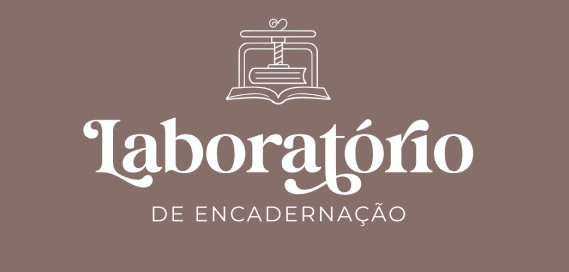
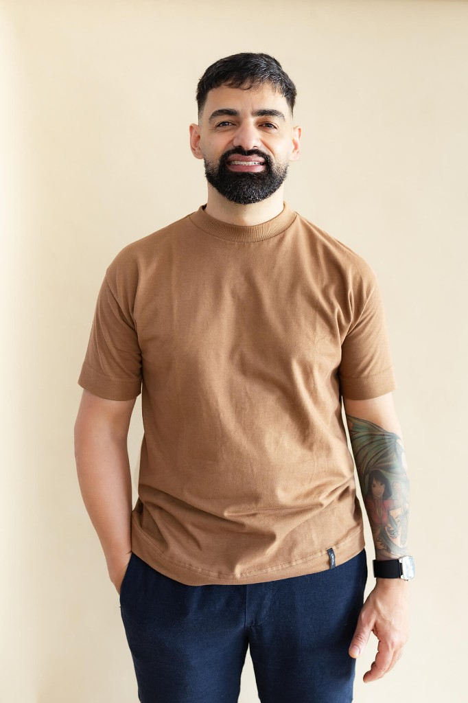

O Laboratório Sewn Boards ensina a técnica que transforma encadernação artesanal em produto premium — para quem quer começar do zero já com padrão profissional, ou para quem vende há anos e ainda cobra menos do que deveria.
Acesso gratuito ao grupo + aviso prioritário da aula ao vivo em 05/06.
Muitos artesãos passam horas criando peças bonitas…
mas continuam presas em produtos que parecem "mais do mesmo".
Porque existe uma diferença enorme entre fazer encadernação artesanal…
e criar produtos que parecem peças editoriais de coleção.
E essa diferença está na estrutura, no acabamento e na técnica.
Uma estrutura clássica e sofisticada que une:
Durante o Laboratório Sewn Boards, Leandro Mendes vai ensinar passo a passo a construção de um kit coordenado de papelaria artesanal de alto padrão.
Tudo pensado para criar uma linha visual coesa, sofisticada e com valor percebido elevado.

Leandro Mendes Macedo é artesão, professor e fundador do Studio Leh Crafts. Sua trajetória foi construída dentro da prática da encadernação, atuando inicialmente em oficinas de pequeno e médio porte, onde desenvolveu experiência em produção, organização de processos, acabamento e controle de qualidade.
Com o passar dos anos, levou esse conhecimento para o universo da encadernação artesanal, aprofundando-se nas necessidades reais de artesãos e papeleiras que desejam transformar seus ateliês em negócios estruturados e valorizados.
Hoje, Leandro une técnica, prática e posicionamento profissional para ajudar artesãs a criarem papelarias que encantam, organizarem seus processos produtivos e desenvolverem produtos com mais valor dentro da economia criativa.
Fundador do Studio Leh Crafts, já impactou milhares de alunas em todo o Brasil por meio de um método baseado na prática, repetição e consistência — pilares que acredita serem essenciais para dominar a encadernação artesanal com excelência, cuidado e identidade em cada peça.
Embora Leandro utilize equipamentos profissionais em seu próprio ateliê, o método ensinado no Laboratório foi pensado para a realidade da encadernação artesanal.
"O foco não é ter máquinas industriais."
"O foco é aprender a pensar e construir como uma encadernação profissional."
Você terá acesso aos moldes e estruturas utilizados na construção dos produtos ensinados durante o Laboratório.
Se você se identifica com algum desses perfis, o Laboratório Sewn Boards foi feito para você.
Sim. A aula começa do zero absoluto, sem pré-requisitos.
Não. O método foi pensado pro ateliê artesanal, com material acessível.
Não. A aula de abertura em 05/06 é gratuita. O Grupo VIP garante seu aviso prioritário.
Você recebe conteúdos preparatórios e o link da aula ao vivo no dia 05/06. Sem compromisso de compra.
Entre para o Grupo VIP e participe da aula de abertura do Laboratório Sewn Boards.
Entrar no Grupo VIP Vagas limitadas para acesso ao grupo e aviso prioritário da abertura.